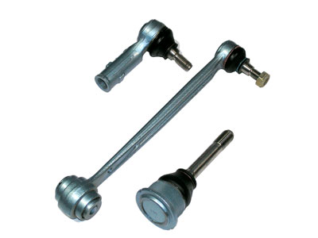

Правильная диагностика — это важно
Качество ремонта рулевого управления очень сильно зависит от проведенной правильно диагностике, в ходе которой окончательно выясняется какая деталь в действительности вышла из строя. Это как лечение больного, главное правильно поставить диагноз. Основными деталями, которые обычно выходят из строя в рулевом управлении это рулевые тяги, рулевые рейки, рулевые наконечники и колонки, реже гидроусилители или усилители руля с электроприводом, но обычно они просто заменяются.
К признакам выхода из строя рулевых тег можно отнести:
Постоянное виляние из стороны в сторону передних колес автомобиля во время движения (признак износа шарниров в рулевой тяге).
Быстрый, буквально на глазах, износ протектора шин передних колес (признак повреждения рулевых тяг).
Слышен стук во время движения автомобиля. Данный стук говорит о том, что в соединениях рулевых тяг появились зазоры, в данной ситуации достаточно сильнее затянуть гайки. Однако может даже придется провести замену наконечника рулевой тяги вследствие его полного износа.
Но если наконечник рулевой тяги имеет сильные повреждения, то в некоторых случаях приходиться провести замену самой рулевой тяги. В принципе ремонт рулевых тяг можно провести и самостоятельно в гаражных условиях, так как мы видим, что он предполагает замену втулок, шарниров и шкворней. Здесь в основном присутствует механическая работа, при которой нет необходимости в большом количестве специализированного дорогостоящего оборудования, поэтому ремонт рулевого управления в данной ситуации подвластен любому опытному водителю.